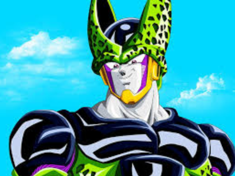

Cell
Cell é um dos principais antagonistas da franquia Dragon Ball, criada por Akira Toriyama. Ele é um bio-androide criado pelo Dr. Gero, um cientista do Exército Red Ribbon, com o objetivo de atingir a perfeição absoluta nas artes marciais e superar todos os lutadores do universo. Cell é uma criatura composta de células de alguns dos guerreiros mais poderosos do universo, incluindo Goku, Vegeta, Piccolo e Freeza, entre outros. Ele passa por várias formas de evolução ao longo da série, cada uma aumentando sua força e habilidades de combate.